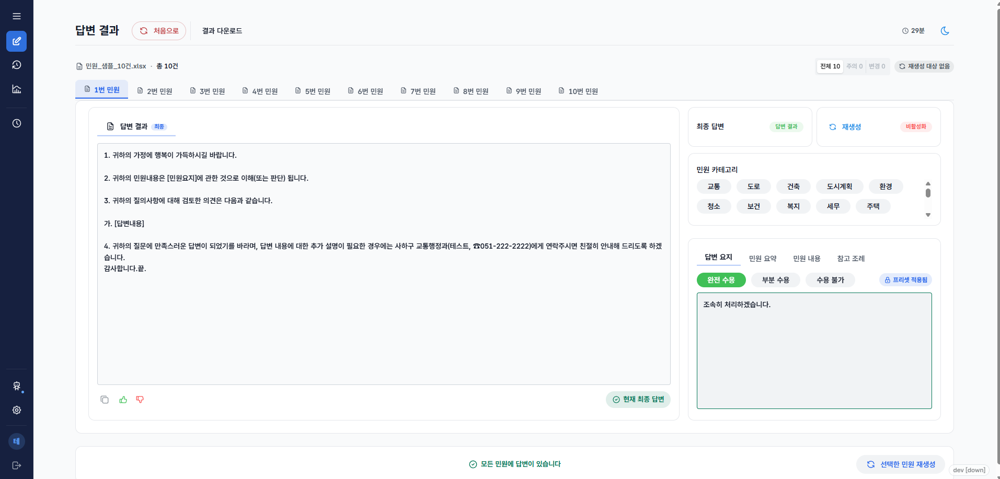

민원과 답변을 함께 확인
원문과 답변 요지를 참고하며
요청 내용을 충분히 담았는지 살펴봅니다.
MAKE ROOM FOR WHAT MATTERS
반복되는 업무에는 더 적은 시간을.
정말 중요한 일에는 더 많은 시간을.
라이트워크가 만들어가는 일의 새로운 기준입니다.
A LITTLE LESS WORK. A LITTLE MORE LIFE.
ABOUT LIGHTWORK
라이트워크는 사람들이 반복되는 업무에 쓰는 시간을 줄이는 방법을 고민합니다.
민원팩토리는 그 첫걸음입니다.
01 OUR SERVICE
민원팩토리
기관 내부 환경에 설치해 사용하는 온프레미스 방식의 민원 답변 지원 시스템입니다. 접수된 민원을 정리하고 AI로 답변 초안을 준비하며, 담당자가 검토·수정해 파일로 내려받는 흐름을 연결합니다.
민원팩토리 업무 흐름 살펴보기AI와 함께 준비하는 민원 답변
MINWON FACTORY / WORKFLOW
AI는 초안을 준비하고,
담당자는 내용을 확인하고 판단합니다.
직접 입력하거나
엑셀·CSV 파일을 불러옵니다.
민원 요약과 카테고리를 확인하고,
답변 요지와 양식을 준비합니다.
입력한 민원과 답변 방향을 바탕으로
답변 초안을 준비합니다.
담당자가 답변을 다듬고
최종 답변을 선택해 활용합니다.
A CLOSER LOOK
민원 내용과 답변을 함께 살펴보고,
필요한 부분을 직접 다듬습니다.
AI가 작성한 초안은 담당자의 검토를 거쳐 활용합니다.

원문과 답변 요지를 참고하며
요청 내용을 충분히 담았는지 살펴봅니다.
사실관계와 처리 방향을 확인하고
업무에 맞는 표현으로 다듬습니다.
최종 답변을 선택한 뒤 복사하거나
엑셀·CSV 파일로 내려받습니다.
REFERENCE
관련 법률을 검색하고 조문을 확인해 답변 작성에 참고합니다.
법령 검색은 연동 설정에 따라 이용할 수 있습니다.
기관 내부 환경에 설치하는 온프레미스 시스템민원팩토리 이용·도입에 관한 사항은 문의해 주세요.
이용 문의CONTACT US
이메일을 누르면 메일 앱에서 문의를 작성할 수 있습니다.